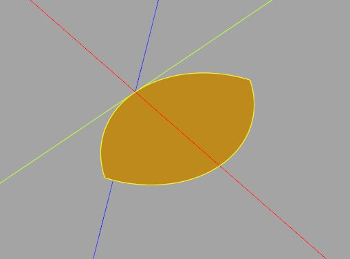
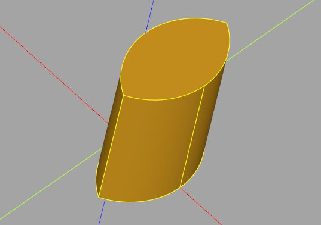
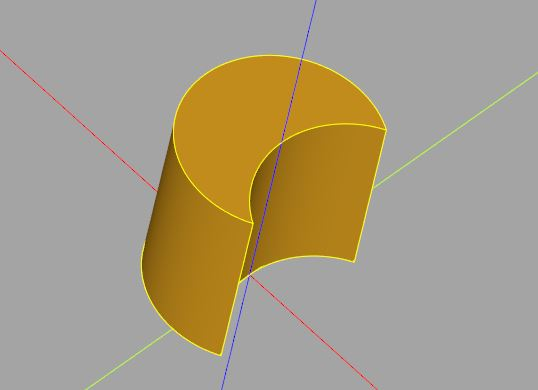
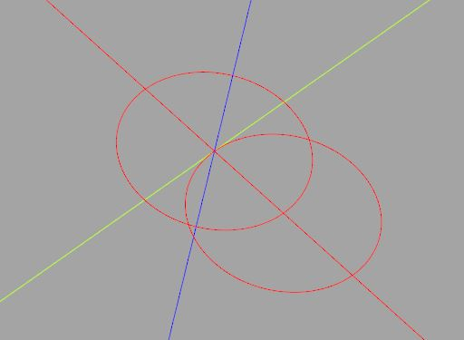
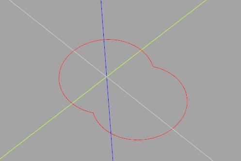
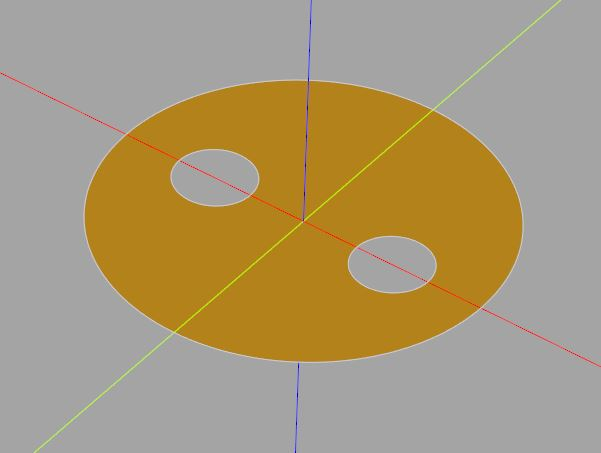
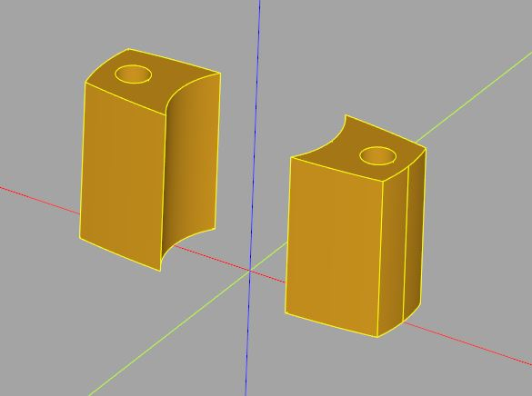
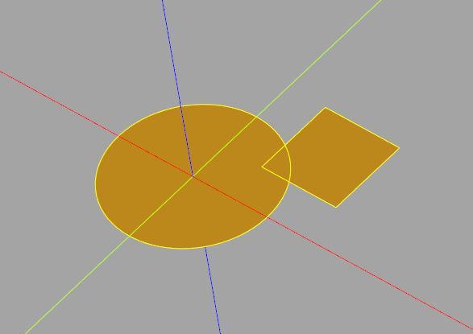
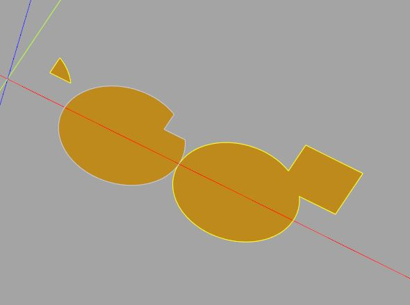
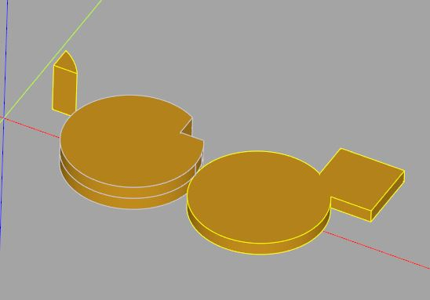

Face 布林操作
November 26, 2021在〈基本 2D 操作〉中談到，線其實可以做布林運算，不過在行為上，與其他繪圖軟體中很直覺的交集、聯集、減集操作並不相同，現在要來進一步解釋，並瞭解如何對 2D 概念的物件進行布林運算。
CadQuery 採 BREP 概念，從頂點到複合體，它們都是 Shape 的子型態，而 Shape 定義了 intersect、cut 與 fuse 方法，也就是說，從頂點到複合體，都可以進行布林操作。
只不過，頂點與邊的布林操作是什麼作用呢？其實就是重疊與否！以 intersect 來說，頂點與另一頂點的交集，就是看這兩個點是否重合，邊與另一條邊的交集，就是看這兩個邊是否重合，因此若是想做圓、方形之類的交集、聯集、減集操作，頂點與邊的布林操作基本上派不上用場。
比較容易被誤會的是線，在 CadQuery 中，線通常會圍住一個面，而且像是擠出之類的操作，是以線與基礎，因此在布林操作上常會被誤會，注意，線終究是線，不是一個面，如果你將兩條線進行交集，你會得到線與線重疊的部份，而不是線圍住的面重疊的部份。
在 CadQuery 中，構成一個區域的其實是面，其他繪圖軟體中很直覺的交集、聯集、減集操作，必須使用面來達成。
面的交集
這邊先從簡單的實心形狀開始，例如，來建立兩個圓的交集：
from cadquery import Vector, Wire, Face
# 建立 Wire
normal = Vector(0, 0, 1) # 用法向量指定平面
wire_c1 = Wire.makeCircle(5, Vector(0, 0, 0), normal)
wire_c2 = Wire.makeCircle(5, Vector(5, 0, 0), normal)
# 建立 Face
face_c1 = Face.makeFromWires(wire_c1)
face_c2 = Face.makeFromWires(wire_c2)
# 用 Face 來交集
intersected = face_c1.intersect(face_c2)
show_object(intersected)
這會顯示以下的結果：

intersected 參考的會是 Compound 實例，可以透過 Vertices、Edges、Wires 等方法，取得對應型態的物件，例如，若想進行擠出必須如下：
from cadquery import Vector, Wire, Face, Solid
normal = Vector(0, 0, 1) # 用法向量指定平面
wire_c1 = Wire.makeCircle(5, Vector(0, 0, 0), normal)
wire_c2 = Wire.makeCircle(5, Vector(5, 0, 0), normal)
# 建立 Face
face_c1 = Face.makeFromWires(wire_c1)
face_c2 = Face.makeFromWires(wire_c2)
# 用 Face 來交集
intersected = face_c1.intersect(face_c2)
wires = intersected.Wires() # 傳回一組 Wire
solid = Solid.extrudeLinear(wires[0], [], Vector(0, 0, 10))
show_object(solid)
Wires 方法名稱是複數，這是因為某些 Face 交集後，可能會產生兩個以上分離的 Face，從分離的 Face 自然會取得分離的 Wire；另一方面，面可能是空心也是一個原因，稍後會談到。
這邊的形狀很單純，因此只取索引 0 的 Wire 來擠出，這會建立以下的模型：

面的減集
類似地，也可以建立一個減集來擠出：
from cadquery import Vector, Wire, Face, Solid
normal = Vector(0, 0, 1) # 用法向量指定平面
wire_c1 = Wire.makeCircle(5, Vector(0, 0, 0), normal)
wire_c2 = Wire.makeCircle(5, Vector(5, 0, 0), normal)
# 建立 Face
face_c1 = Face.makeFromWires(wire_c1)
face_c2 = Face.makeFromWires(wire_c2)
# 用 Face 來減集
intersected = face_c1.cut(face_c2)
wires = intersected.Wires()
solid = Solid.extrudeLinear(wires[0], [], Vector(0, 0, 10))
show_object(solid)
這會建立以下的模型：

面的聯集
那麼 fuse 呢？表面上看來，它是計算 Face 的聯集，不過它預設會保留既有的線，若線圍成一個形狀，就會獨立為一個 Wire 物件。例如：
from cadquery import Vector, Wire, Face
normal = Vector(0, 0, 1) # 用法向量指定平面
wire_c1 = Wire.makeCircle(5, Vector(0, 0, 0), normal)
wire_c2 = Wire.makeCircle(5, Vector(5, 0, 0), normal)
# 建立 Face
face_c1 = Face.makeFromWires(wire_c1)
face_c2 = Face.makeFromWires(wire_c2)
# 用 Face 來融合
intersected = face_c1.fuse(face_c2)
wires = intersected.Wires()
for wire in wires:
show_object(wire)
這會產生三個 Wire，顯示出以下的結果：

上例中使用 for 迴圈，只是為了突顯 wires 是一組 Wire，其實單就顯示來說，可以將 wires 直接傳入 show_object，因為它可以接受 list。
如果你想取互斥集，只要保留 wire[0]、wire[2]，因此 fuse 的彈性，其實比聯集大，不過，若確實只是想取聯集呢？那就呼叫 clean 方法，將多餘的 Wire 去除：
from cadquery import Vector, Wire, Face
normal = Vector(0, 0, 1) # 用法向量指定平面
wire_c1 = Wire.makeCircle(5, Vector(0, 0, 0), normal)
wire_c2 = Wire.makeCircle(5, Vector(5, 0, 0), normal)
# 建立 Face
face_c1 = Face.makeFromWires(wire_c1)
face_c2 = Face.makeFromWires(wire_c2)
# 用 Face 來聯集
intersected = face_c1.fuse(face_c2).clean()
wires = intersected.Wires()
show_object(wires)
這會顯示以下的結果：

空心的形狀
如果是有空心的形狀呢？在 CadQuery 中，若想組成具有空心的面，必須指定一個外圍線，以及一組各自圍住空心範圍的內圍線。例如：
from cadquery import Vector, Wire, Face
normal = Vector(0, 0, 1) # 用法向量指定平面
outerWire = Wire.makeCircle(10, Vector(0, 0, 0), normal)
innerWire1 = Wire.makeCircle(2, Vector(5, 0, 0), normal)
innerWire2 = Wire.makeCircle(2, Vector(-5, 0, 0), normal)
face = Face.makeFromWires(outerWire, [innerWire1, innerWire2])
show_object(face)
這會顯示以下的結果：

對於一個 Face，可以透過 outerWire、innerWires 來取得外圍線以及內圍線。
假設現在的需求時，想取得具有空心形狀的交集結果，並進行擠出，可以如下：
from cadquery import Vector, Wire, Face, Solid
normal = Vector(0, 0, 1) # 用法向量指定平面
# 空心圓
face_circle = Face.makeFromWires(
Wire.makeCircle(10, Vector(0, 0, 0), normal),
[Wire.makeCircle(5, Vector(0, 0, 0), normal)]
)
# 有兩個空心的橢圓
face_ellipse = Face.makeFromWires(
Wire.makeEllipse(15, 3, Vector(0, 0, 0), normal, Vector(1, 0, 0)),
[
Wire.makeCircle(1, Vector(8, 0, 0), normal),
Wire.makeCircle(1, Vector(-8, 0, 0), normal)
]
)
intersected = face_circle.intersect(face_ellipse)
height = Vector(0, 0, 10)
# 逐一取得面
for face in intersected.Faces():
solid = Solid.extrudeLinear(
face.outerWire(),
face.innerWires(),
height
)
show_object(solid)
這會建立以下的結果：

封裝布林操作
如果想要基於以上的概念，將一些細節封裝起來，提供像是 OpenSCAD 中 intersection、difference、union 的操作，該是基於 Wire，還是基於 Face 呢？這就要先問，OpenSCAD 中 circle、square 等基本形狀，對應的是 Wire 還是 Face 呢？
因為 OpenSCAD 中，linear_extrude 等原生的擠出模組，是基於 circle、square 等基本形狀，而 CadQuery 中的擠出等函式，是基於 Wire，你可能會想，應該是對應於 Wire 比較好吧！
其實也不是不行，只不過這會讓客戶端覺得 API 很麻煩，比較好方式是，提供類似 OpenSCAD 的 circle、square 等實作。例如：
from cadquery import Vector, Edge, Wire, Face, Compound
# 實作 circle、square
def circle(radius, center = None):
ct = Vector(*center) if center else Vector(0, 0)
return Compound.makeCompound([
Face.makeFromWires(
Wire.makeCircle(radius, ct, Vector(0, 0, 1))
)
])
def square(size, center = None):
ct = center if center else [0, 0]
x = size[0] / 2
y = size[1] / 2
edges = [
Edge.makeLine(Vector(ct[0] + x, ct[1] - y), Vector(ct[0] + x, ct[1] + y)),
Edge.makeLine(Vector(ct[0] + x, ct[1] + y), Vector(ct[0] - x, ct[1] + y)),
Edge.makeLine(Vector(ct[0] - x, ct[1] + y), Vector(ct[0] - x, ct[1] - y)),
Edge.makeLine(Vector(ct[0] - x, ct[1] - y), Vector(ct[0] + x, ct[1] - y))
]
return Compound.makeCompound([
Face.makeFromWires(
Wire.assembleEdges(edges)
)
])
show_object(circle(5))
show_object(square([5, 5], center = [5, 5]))
這會顯示以下結果：

circle、square 傳回的是 Compound，這是為了統一使用的型態，接著以實作 difference 為例，接受的是 Compound，傳回的是 Compound：
from cadquery import Vector, Edge, Wire, Face, Compound, Workplane
def circle(radius, center = None):
ct = Vector(*center) if center else Vector(0, 0)
return Compound.makeCompound([
Face.makeFromWires(
Wire.makeCircle(radius, ct, Vector(0, 0, 1))
)
])
def square(size, center = None):
ct = center if center else [0, 0]
x = size[0] / 2
y = size[1] / 2
edges = [
Edge.makeLine(Vector(ct[0] + x, ct[1] - y), Vector(ct[0] + x, ct[1] + y)),
Edge.makeLine(Vector(ct[0] + x, ct[1] + y), Vector(ct[0] - x, ct[1] + y)),
Edge.makeLine(Vector(ct[0] - x, ct[1] + y), Vector(ct[0] - x, ct[1] - y)),
Edge.makeLine(Vector(ct[0] - x, ct[1] - y), Vector(ct[0] + x, ct[1] - y))
]
return Compound.makeCompound([
Face.makeFromWires(
Wire.assembleEdges(edges)
)
])
# 實作交集、減集、聯集
def intersection(compound1, compound2):
return compound1.intersect(compound2)
def difference(compound1, compound2):
return compound1.cut(compound2)
def union(compound1, compound2):
return compound1.fuse(compound2).clean()
c = circle(5)
s = square([5, 5], center = [5, 5])
show_object(intersection(c, s))
show_object(Workplane(difference(c, s)).translate((10, 0)))
show_object(Workplane(union(c, s)).translate((20, 0)))
這會顯示以下的結果：

進一步地，若要提供 linear_extrude：
from cadquery import Vector, Edge, Wire, Face, Compound, Solid, Workplane
def circle(radius, center = None):
ct = Vector(*center) if center else Vector(0, 0)
return Compound.makeCompound([
Face.makeFromWires(
Wire.makeCircle(radius, ct, Vector(0, 0, 1))
)
])
def square(size, center = None):
ct = center if center else [0, 0]
x = size[0] / 2
y = size[1] / 2
edges = [
Edge.makeLine(Vector(ct[0] + x, ct[1] - y), Vector(ct[0] + x, ct[1] + y)),
Edge.makeLine(Vector(ct[0] + x, ct[1] + y), Vector(ct[0] - x, ct[1] + y)),
Edge.makeLine(Vector(ct[0] - x, ct[1] + y), Vector(ct[0] - x, ct[1] - y)),
Edge.makeLine(Vector(ct[0] - x, ct[1] - y), Vector(ct[0] + x, ct[1] - y))
]
return Compound.makeCompound([
Face.makeFromWires(
Wire.assembleEdges(edges)
)
])
def intersection(compound1, compound2):
return compound1.intersect(compound2)
def difference(compound1, compound2):
return compound1.cut(compound2)
def union(compound1, compound2):
return compound1.fuse(compound2).clean()
# 實作 linear_extrude
def linear_extrude(compound, height):
solids = []
for face in compound.Faces():
solids.append(
Solid.extrudeLinear(
face.outerWire(),
face.innerWires(),
Vector(0, 0, height)
)
)
return Compound.makeCompound(solids)
c = circle(5)
s = square([5, 5], center = [5, 5])
intersected = intersection(c, s)
differenced = difference(c, s)
unioned = union(c, s)
show_object(linear_extrude(intersected, 4))
show_object(Workplane(linear_extrude(differenced, 2)).translate((10, 0)))
show_object(Workplane(linear_extrude(unioned, 1)).translate((20, 0)))
簡單來說，就是將一切細節封裝起來，這會顯示以下的結果：

將一切細節封裝起來，是為了方便使用，當然，以上示範的，只是以 OpenSCAD 的觀點來進行封裝，沒有考量 CadQuery 的風格，如果是以打造程式庫為目標，並想融入 CadQuery 典範，還需要更多努力，這就留給你來嘗試了…XD